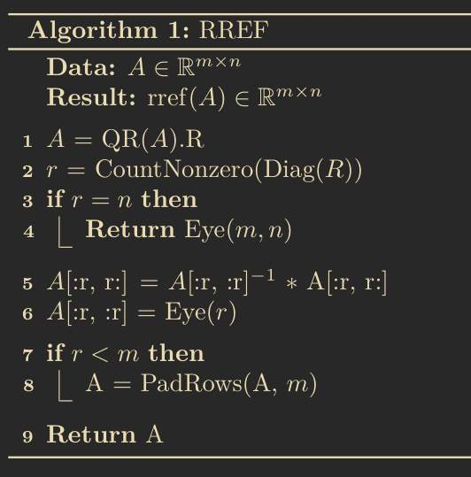

Pensées 8: Objective Morality and an RREF Algorithm
An obvious argument for the non-existence of an objective morality stated somewhat formally, and an algorithm I thought of for computing the RREF. Edit: the RREF algorithm has a critical flaw, it is inaccurate in some cases.
Read here